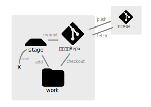

git-memo

用語 ---
- Repo
- gitが持つデータのストレージ
- work
- 自分の作業ファイル達
- stage
- コミットされるファイル達が置かれる場所
- node
- コミットされたポイント
- hash値で表現される
- branch
- nodeへのポインタ
- まずは "master", "main" などと命名されている
- "HEAD"
- branchへのポインタ or nodeへのポインタ
- 自分がいる場所を示す特別名
gitでやること ---
- workの状況を見る
git statusgit diff
- workをstageに登録する
git add {file} ...
- stageから取り除く
git reset {file} ...
- stageをコミットする
git commit -m "{comment}"
- node達の状況を見る
git log --all --oneline --graph
- ローカルのnode達をリモートに送る
git push
- リモートのnode達をローカルに取り込む
git fetch
- workにnodeを自動マージして結果をコミットする
git merge {node}[±work]- 自動マージできない時は止まるので、手動マージ＆コミット
- branchの向きを変える
git branch -f {branch} {node}- {branch}が{node}へ向く
- "HEAD"の向きを変える
git checkout {branch}[±work]- workが{branch}の向いている{node}時の状況になる
HEADが{branch}へ向く
git checkout {node}[±work]- workが{node}時の状況になる
HEADが{node}へ向く
たまにやること ---
- workを元に戻す
git checkout -f[±work]
- node時のファイルを見る
git show {node}:{file}
- node時のファイルを取り出す
git checkout {node} -- {file}[±work]
- nodeの状態を固めて出す
git archive --format=zip {node} > exported.zip
- headless Repo を作る
git init --bare --shared- work, stage, "HEAD" ができない
- push, fetch専用
糖衣コマンド ---
git pull[±work] == fetch, merge